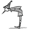
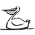
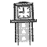
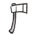

Анатомия иероглифа
Приглядитесь к этим каракулям:
Какие-то из этих ключиков имеют смысл и употребляются отдельно, другие употребляются только в составе с другими. По раздельности эти элементы просты (за исключением нескольких особо древних) Вот примеры этих ключиков:
- 要 состоит из ключей 女 и 西
- 没 состоит из ключей 氵 и 殳
- 想 состоит из ключей 木 и 目 и 心
- 捰 состоит из ключей 扌 и 田 и 木
Ну и что же нам это дает? Пока и вправду ничего. Эти ключики, как и составленный из них иероглиф не имеют для нас смысла.
Чтобы сделать их понятными и узнаваемыми, нам придется вложить в них смысл самим. И только после этого они превратятся из непонятных закорючек в наших хороших друзей. С помощью, которых мы будем учить, и запоминать огромное количество иероглифов, необходимых нам для освоения китайского языка.
Наша система запоминания иероглифов – система МАО будет основана именно на этих ключиках. Так что с этого момента будьте повнимательней.
Мнемоключики
Раньше мы уже выяснили, что радикал – ключик, это то, из чего состоит иероглиф.
То есть каждый иероглиф состоит из определенного числа радикалов. Число этих ключиков ограничено, немного больше 200.
Наша система МАО как раз и основана на этих ключиках.
Кроме радикалов в нашу систему входит еще несколько простых иероглифов, которые часто входят в состав более сложных.
В итоге у нас набирается чуть больше 250 элементов системы.
Попробуем пофантазировать, на что может быть похож следующий элемент:
| 方 |

|
|
勹 |
 | буратино |
|
殳 |
наполеон | |
|
乙 |
 | пеликан |
|
骨 |
 | куранты |
|
尸 |
 | топор |
В нашей системе мы предлагаем учить радикалы – ключики, именно таким нелепым образом.
Большинство наших картинок будет соотноситься с радикалами не по значению, а по внешнему виду.
Когда мы встречаем иероглиф, мы воспринимаем его визуально.
И нам важно, чтобы ключики, заключенные в нем, запускали процесс перевода мгновенно.
Это должно обеспечиваться визуальной схожестью радикала с нашим визуальным кодом-картинкой.
Да, радикалы в китайском языке имеют свое собственное значение.
Но из-за абстрактности многих понятий этих значений, мы сознательно от них отказываемся.
Ну, очень сложно подобрать к этим истинным значениям картинки.
А без них наша память не может работать естественно и продуктивно и мы снова возвращаемся к зубрежке.
Конечно, в нашей системе есть и совпадения, часть картинок соответствует настоящему значению радикалов.
Поясняем суть системы МАО. Каждому радикалу-ключику мы присваиваем одну картинку.
Постепенно заучиваем весь ряд. Таким образом, наш мозг теперь будет узнавать в незнакомом иероглифе не безликие радикалы,
а осмысленные картинки, которые присвоены этим радикалам. Довольно забавно.
Дальше мы разберем это подробно.
Уважаемые китаисты начнут меня обвинять в неправильном подходе, затронут традиции и философии этих древнейших знаков.
Каюсь, но у меня не стояло цели постигать древнее значение иероглифа, его эволюционное развитие, философию.
Я не китаец и для меня иероглиф представляет значок, закорючку – в которой скрыт перевод на русский. И все.
Другой фактор это ограниченность во времени. Я не могу сейчас потратить 5-7 лет на изучения китайского языка в ВУЗе, по традиционной методике.
У меня просто уже нет на это времени. А китайский знать надо.
Вот и приходиться хитрить. Так что приношу всем уважаемым китаистам и синологам свои искренние извинения,
за «неправильный» подход к изучению китайского языка. У меня не было цели рушить их устоявшиеся традиции и проторенные дорожки :)
Приводим список всех ключей в нашей системе, снабжаться комментариями и пояснениями.
Список всех ключей
Их немного больше 250 элементов, их все нужно знать наизусть.Система МАО – это не незыблемая догма. Если у Вас на тот или иной ключик появляется свой образ, или картинка - смело заменяйте наш вариант. Вы можете добавлять в систему свои элементы, исключать на ваш взгляд лишние, модернизировать и улучшать систему. Главное, чтобы вам было удобно, легко и комфортно пользоваться системой.
Вы должны уметь писать каждый радикал – ключик. Узнавать в сложных иероглифах эти ключики. В вашей памяти должны быть созданы прочные ассоциативные цепочки. Чтобы при виде каждого радикала – автоматически всплывала картинка.
Не спешите скакать дальше, потратьте 20-30 дней и выучите ее.
Это фундамент, который будет сильно помогать нам в дальнейшем, так постарайтесь сделать его прочным и качественным.
Небольшое отступление: многие из радикалов имеют свое определенное значение, перевод.
Они также используются отдельно, а не только в составе других иероглифов.
Но мы в системе МАО сделали упор на визуальное сходство.
Так что на этом этапе не заморачивайтесь с переводом, а сосредоточьтесь именно на визуальной связи радикала с картинкой.
А перевод их мы узнаем позже.
Выучили ключики? Пора научиться пользоваться этой системой. Разбейте следующие иероглифы:
| Мнемоключи | Значение | |
|---|---|---|
| 问 | дверь, рот (или окошко) | спрашивать |
| 要 | грузин, девушка | хотеть |
| 好 | девушка, посох | хорошо |
| 怕 | сердце, холодильник | бояться |
| 影 | солнце, старичок, когти (тень) | тень |
| 艺 | пеликан и венок | навык, мастерство |
| 艺 | динозавр, сердце | забывать |
| 床 | крокодил, дерево | кровать |
| 吃 | рот, тяпка и пеликан | есть, кушать |